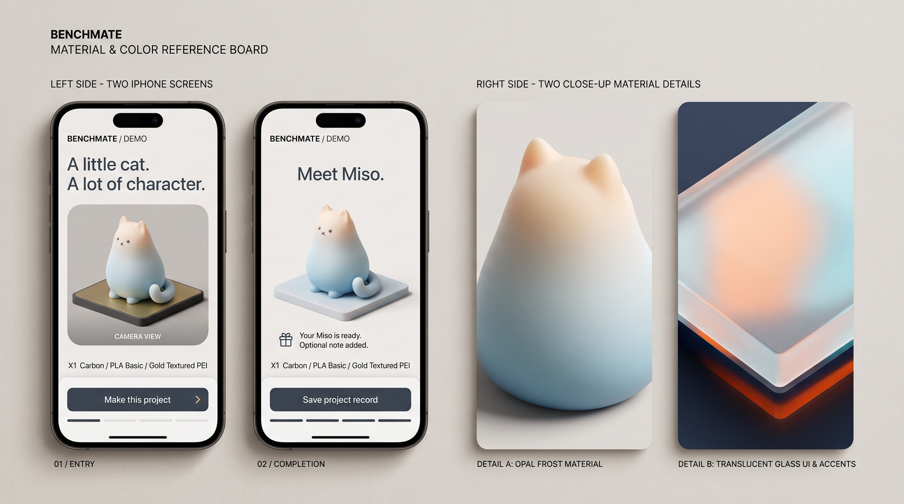
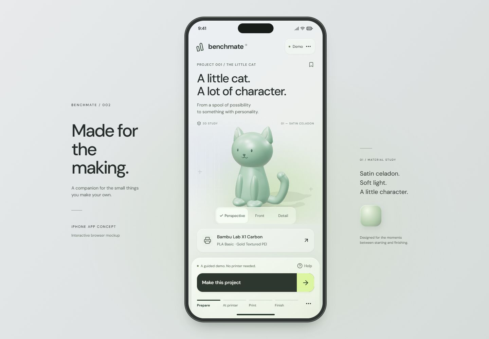
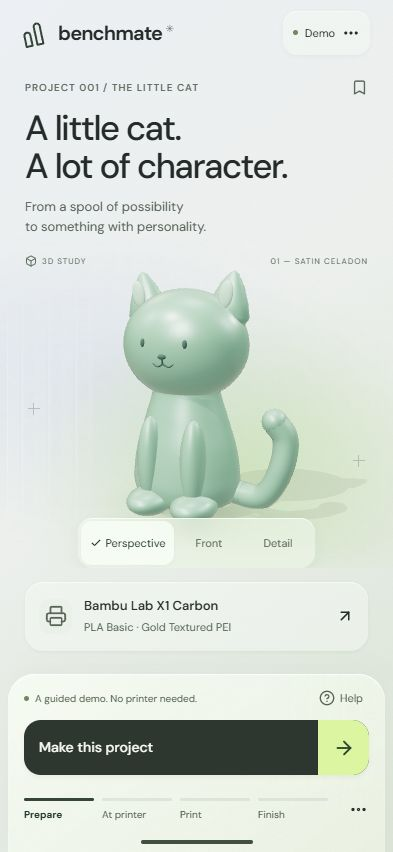
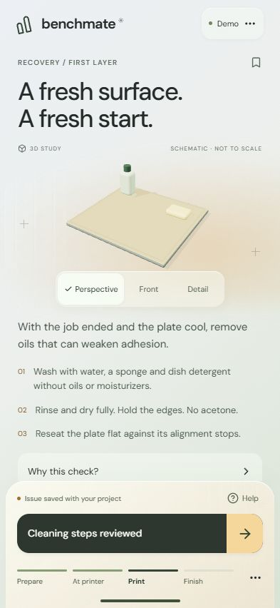
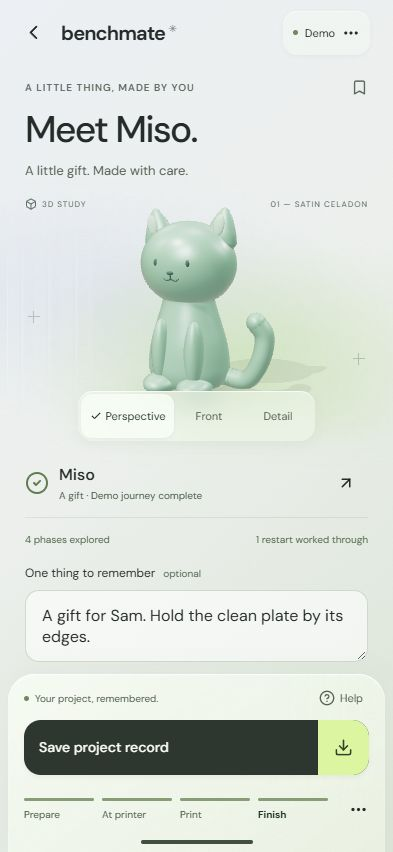
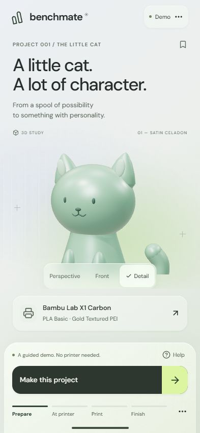
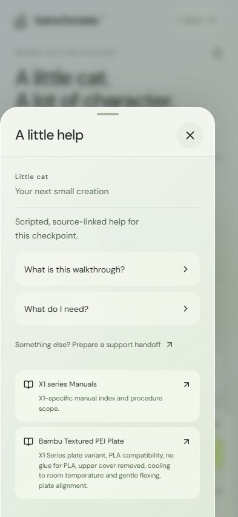
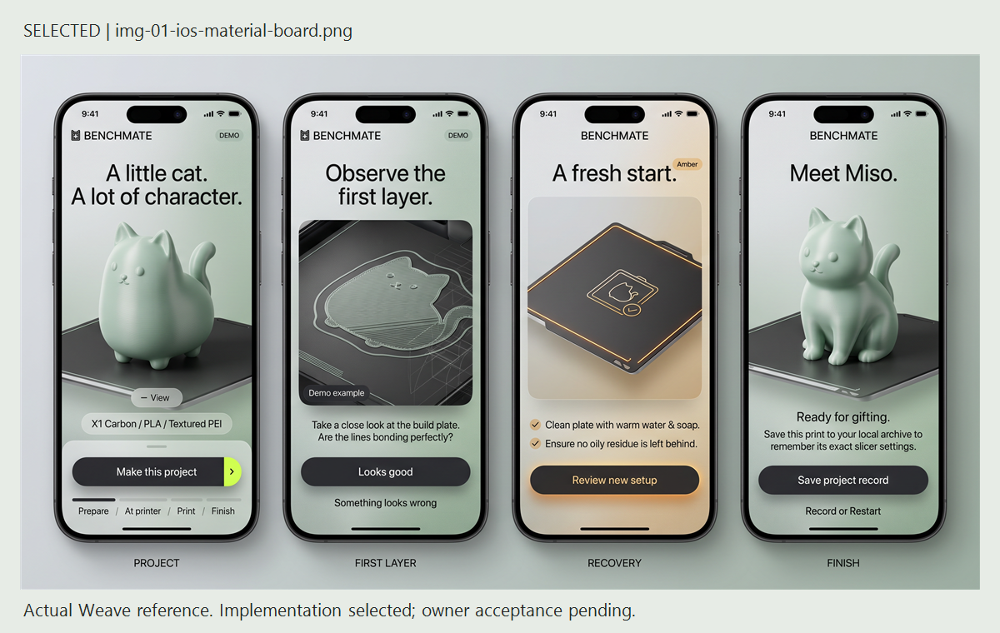

Made for the making.
An interactive iPhone mockup with a live 3D cat, satin material, cloudy matte glass and a complete guided project. Actual application captures appear below; the generated design reference is identified separately.
Open the running app ↗ · Design specification · Evidence and provenance
Current Visual Review: Complete Workflow · 24 Screens. Eight concept boards continue the purple/citron glass and matrix direction from discovery through completion, including photo help, recovery, Collection, Community, Profile and pause/resume. Headers use Title Case and titles/subtitles have no periods. No application code changed. The existing r2 implementation and historical research remain below.
New material study — not implemented

The running app

A little character.

A fresh start.

Made by you.

Material detail

Help, in context

The executed Weave reference

Checked: seven state tests, production build, 3D views, happy path, recovery, help, keyboard focus, persistence, reset and actual record download. Viewports: 393 × 852, 320 × 740 and 1440 × 1000.
No physical iPhone/Safari, touchscreen, printer, screen-reader or forced GPU-failure test. Independent prototype with no Bambu Lab affiliation, sensor feed, machine control, support submission or paid runtime AI.
Full verification and PANDA adaptation · Revision history · Source register